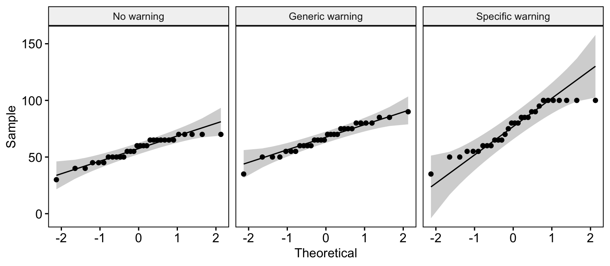
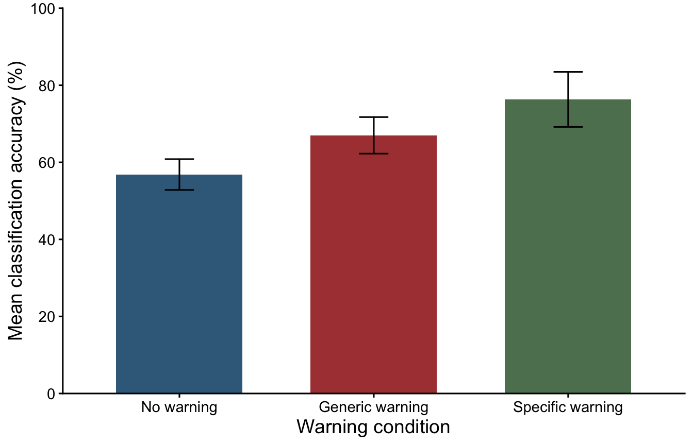

library(tidyverse) # Import, organise,and plot data
library(rstatix) # Descriptives, assumptions, and statistical tests
library(ggpubr) # Diagnostic plots
library(effectsize) # Effect sizes and their confidence intervals3. Single-Factor Within-Participants ANOVA
Mark Hurlstone
Lectures
Watch Lecture 1 Part 1 here
Watch Lecture 1 Part 2 here
Watch Lecture 1 Part 3 here
Download the Lecture 1 slides here and here for a larger version.
Watch Lecture 2 Part 1 here
Watch Lecture 2 Part 2 here
Watch Lecture 2 Part 3 here
Download the Lecture 2 slides here, here for a larger version, and here for the live version.
This week, we will explore within-participants designs, in which the same participants take part in every experimental condition. We will consider the advantages and disadvantages of this approach, including how it allows us to control for individual differences, as well as potential problems such as order effects. We will then turn to within-participants ANOVA, the statistical technique used to analyse such designs, examining how this technique builds on the principles of between-participants ANOVA. In particular, we will explore how removing individual differences from the error term can increase the sensitivity of our statistical tests. Before attending the practical class, please review the Week 3 lecture materials and recordings above. There are some optional multiple-choice questions below connected to Lecture 1 to help you consolidate your learning and it is recommended to complete these once you have viewed the lecture recordings.
Multiple-Choice Questions for Lecture 1: Within-Participants Designs
Work through the following questions with the members of your group. Select the response you think is correct before expanding Show answer to check your understanding.
Question 1
How many participants would be needed for a within-participants experiment comparing four different treatment conditions with a total of 20 scores in each treatment? (1)
- 20
- 40
- 80
- Cannot answer without more information
TipShow answer
Answer: 1. 20
Each participant completes all four treatment conditions, contributing one score to each. Therefore, 20 participants provide 20 scores per treatment.
Question 2
In a within-participants research study comparing different treatment conditions at different times, what kind of validity is threatened by factors that change over time, such as history and maturation? (1)
- Internal validity
- External validity
- Both internal and external validity
- Neither internal nor external validity
TipShow answer
Answer: 1. Internal validity
Changes occurring over time can provide alternative explanations for observed differences between treatment conditions, making it difficult to attribute those differences to the independent variable.
Question 3
In a within-participants study that extends over a relatively long time, it is possible that there will be systematic changes in the participants’ skills or knowledge during the time of the study. If these changes influence the participants’ scores, causing scores at the end of the study to be different from scores at the beginning, then what is the effect called? (1)
- History
- Instrumentation
- Maturation
- Regression toward the mean
TipShow answer
Answer: 3. Maturation
Maturation refers to changes within participants over time, such as developing skills or knowledge, that may affect their scores independently of the treatment.
Question 4
What is the effect of increasing the time between treatment conditions in a within-participant experiment? (1)
- It decreases the threat of time-related history effect.
- It decreases the threat of the order fatigue effect.
- It decreases the threat of a time-related maturation effect.
- None of the above options is an effect of increasing time between treatments.
TipShow answer
Answer: 2. It decreases the threat of the order fatigue effect.
Allowing more time between conditions can reduce fatigue carried over from an earlier condition, although it may increase the opportunity for time-related threats such as history and maturation.
Question 5
For a within-participants study comparing two treatments, A and B, a researcher expects that practice in the first treatment will improve the participants’ scores in the second treatment. If the order of treatments is counterbalanced, then what scores will be influenced by the practice? (1)
- Scores in treatment A but not in treatment B
- Scores in treatment B but not in treatment A
- Scores in treatment A for half the participants and scores in treatment B for half the participants
- Practice will not influence the scores because the treatments are counterbalanced
TipShow answer
Answer: 3. Scores in treatment A for half the participants and scores in treatment B for half the participants
Half the participants complete A before B, and the other half complete B before A. Practice therefore affects whichever treatment is completed second, rather than consistently favouring one treatment.
Question 6
Which of the following describes a completely counterbalanced within-participants experiment? (1)
- Each group receives a different treatment.
- Each participant receives each treatment in the same order.
- A series of treatments is presented in every possible sequence.
- Participants receive a random order of treatment conditions.
TipShow answer
Answer: 3. A series of treatments is presented in every possible sequence.
Complete counterbalancing uses all possible orders of the treatment conditions to distribute order effects across conditions.
Question 7
What is measured and removed to reduce the variance in a within-participants design compared to a between-subjects design. (1)
- The individual differences
- The carry over effects
- The progressive error effects
- The instrumentation effects
TipShow answer
Answer: 1. The individual differences
Because each participant completes all conditions, variability attributable to stable differences between participants can be separated from the treatment effect and removed from the error term.
Question 8
Which of the following is an advantage of the between-participants design versus the within-participants design? (1)
- It generally requires fewer participants.
- It usually is a more sensitive test (more likely to detect a treatment effect)
- It eliminates the risk of order effects
- It eliminates potential problems that may be caused by individual differences
TipShow answer
Answer: 3. It eliminates the risk of order effects
Participants complete only one treatment condition, so their scores cannot be affected by practice, fatigue or carryover from completing another treatment condition in the same experiment.
Question 9
Which of the following statements is true regarding the digram-balanced latin square approach to partial counterbalancing. (1)
- It controls for first-order dependencies but not second order dependencies
- It controls for second-order dependencies but not first-order dependencies
- It controls for both first- and second-order dependencies
- Neither of the above
TipShow answer
Answer: 3. It controls for both first- and second-order dependencies
A digram-balanced Latin square distributes treatments across sequence positions and balances the immediately preceding treatment across conditions, offering protection against position-related and first-order carryover effects.
Practical
This week’s lab
This week, you will analyse a hypothetical experiment asking whether misinformation warnings affect how accurately people distinguish true from false social media posts. Unlike the robot study last week, the same participants complete every warning condition. You will also work with a different type of dataset: each participant responds to several posts in each condition, rather than contributing just one response.
By the end of the session, you should be able to:
- Check the structure of a wide-format dataset and identify missing or unexpected responses.
- Convert wide-format data into long format and calculate one accuracy score per participant in each condition.
- Explain why repeated-measures data may be stored in wide format but analysed in long format.
- Explore scores and assess the assumptions of within-participants ANOVA, including sphericity.
- Conduct and interpret a within-participants ANOVA and paired planned and post-hoc comparisons.
- Calculate effect sizes, make a bar chart, and report the results.
Work in your R script and try each activity before opening its answer.
Getting started
To log in to the R server, first make sure that you have the VPN switched on, or you will need to be connected to the university network (Eduroam). To set up the VPN, follow ISS instructions here or connecting to Eduroam here.
When you are connected, navigate to https://ps-rstudio.lancaster.ac.uk/, where you will be shown a login screen that looks like the below. Click the option that says “Sign in with SAML”.

This will take you through to the University login screen, where you should enter your username (e.g. ivorym) and then your university password. This will then redirect you to the R server where you can start using RStudio!


Note
If you have already logged in through the university login, perhaps to get to the portal, then you may not see the username/password screen. When you click login, you will be redirected straight to RStudio. This is because the server shares the login information securely across the university.
Follow the same project setup procedure as in Week 2:
- In RStudio’s Files pane, open your
psyc5141_labsfolder and createpsyc5141_lab_3inside it. - Download the Week 3 dataset and upload it into the new folder.
- Choose File → New Project → Existing Directory, select
psyc5141_lab_3and click Create Project. - Open a new R script and save it as
week3_analysis.Rin this project.
Opening the project sets the working directory to this folder, so there is no need for setwd(). When returning to your work, open the project’s .Rproj file first.
Load the same packages as last week:
Import the dataset from your project folder:
# Read the CSV file and give the imported dataframe a name
lab3_raw <- read_csv("week3_misinformation_wide_conditions.csv")Last week, some of you asked why we keep two versions of the data in R. The first dataframe, lab3_raw, stores the imported values as a reference. We then make a second, working dataframe that we can modify during the analysis. If we accidentally change something, we can compare it with the original or start the preparation again. Neither of these actions changes the CSV saved on disk.
# Create a working dataframe and leave the imported copy unchanged
lab3_data <- lab3_rawThe misinformation-warning experiment
The researchers are interested in whether warnings can encourage people to assess information more carefully and thereby improve their ability to distinguish true from false social media posts. In particular, they want to know whether a warning tailored to the content of a post is more effective than a general reminder to be cautious, and whether it improves accuracy compared with receiving no warning at all.
In this hypothetical experiment, 30 people each classify 20 social media posts as true or false under three warning conditions:
| Condition | What participants see |
|---|---|
| No warning | Posts appear without an accompanying warning. |
| Generic warning | A general reminder that social media information can be misleading and should be evaluated carefully. |
| Specific warning | A warning draws attention to potentially misleading features of a particular post, without giving away whether it is true or false. |
Each participant completes all three conditions. The researchers predict that accuracy will be higher with a specific warning than with no warning, and higher with a specific warning than with a generic warning. These two predictions will become our planned comparisons later in the practical.
The dependent variable for our ANOVA will be the percentage of posts classified correctly in each condition. The raw dataset contains the following variables:
| Variable | Meaning |
|---|---|
Participant |
Identifier for each participant (P01–P30). |
Trial |
Trial number (1–20) within each warning condition. |
No warning |
Classification accuracy for a trial without a warning: 1 = correct, 0 = incorrect. |
Generic warning |
Classification accuracy for a trial with a general warning, using the same 0/1 coding. |
Specific warning |
Classification accuracy for a trial with a content-specific warning, using the same 0/1 coding. |
Understanding the layout of the dataset
Before analysing the results, we need to understand how the responses have been recorded. Each of our 30 participants classified 20 posts under each of the three warning conditions. The data have been supplied in wide format: the three warning conditions have separate columns, so we can view a participant’s responses under each condition side by side.
Unlike the one-response-per-participant examples from earlier weeks, each participant now occupies 20 rows, one for each trial. This gives us 600 rows altogether (30 participants × 20 trials), with five columns:
Participantidentifies the person who completed the trial.Trialgives the trial number, from 1 to 20.No warning,Generic warningandSpecific warningcontain the recorded responses for those conditions, coded 1 for correct and 0 for incorrect.
Here is a simplified illustration of the layout (the values are examples rather than the actual dataset):
| Participant | Trial | No warning | Generic warning | Specific warning |
|---|---|---|---|---|
| P01 | 1 | 1 | 1 | 1 |
| P01 | 2 | 0 | 1 | 1 |
| P01 | 3 | 1 | 0 | 1 |
| P02 | 1 | 0 | 1 | 1 |
Let’s first look at the imported file and check its dimensions.
# Display the first six trial rows from the imported data
head(lab3_data)# A tibble: 6 × 5
Participant Trial `No warning` `Generic warning` `Specific warning`
<chr> <dbl> <dbl> <dbl> <dbl>
1 P01 1 1 1 0
2 P01 2 1 0 1
3 P01 3 1 0 1
4 P01 4 1 1 1
5 P01 5 1 0 1
6 P01 6 1 1 1# Show the numbers of rows and columns in the dataframe
dim(lab3_data)[1] 600 5The result of dim() should be 600 5: 600 participant-trial rows and five columns. There are still only 30 participants, because each person’s identifier appears on 20 different rows.
Checking for missing values
Before changing the data, we’ll perform some of the checks we used last week. First, let’s look for missing entries. is.na() identifies missing values, and colSums() counts them separately in each column.
# Count how many missing values occur in each column
colSums(is.na(lab3_data)) Participant Trial No warning Generic warning
0 0 0 0
Specific warning
0 We expect zero missing values in all five columns. This is reassuring because missing responses would need attention before calculating each person’s accuracy.
Wide format and long format
Why are these data organised with one column for each warning condition? In a within-participants experiment, the same person responds under every condition. Placing those responses side by side makes it easy to see that they belong to the same participant. This is a common way to record or present repeated measurements, although within-participants data do not have to be stored this way. Here, each row identifies a participant and a trial, and the three condition columns contain that person’s responses on that trial.
This arrangement is called wide format: each condition has its own column. The rstatix functions we’ll use for our ANOVA are easier to use with long format, where one column identifies the condition and another contains the response. The Participant column is retained, so R still knows which observations came from the same person.
For example, the first two trials for one participant could be represented as follows:
Wide format (as supplied):
| Participant | Trial | No warning | Generic warning | Specific warning |
|---|---|---|---|---|
| P01 | 1 | 1 | 1 | 1 |
| P01 | 2 | 0 | 1 | 1 |
Long format (after conversion):
| Participant | Trial | Condition | Correct |
|---|---|---|---|
| P01 | 1 | No warning | 1 |
| P01 | 1 | Generic warning | 1 |
| P01 | 1 | Specific warning | 1 |
| P01 | 2 | No warning | 0 |
| P01 | 2 | Generic warning | 1 |
| P01 | 2 | Specific warning | 1 |
These tables are illustrative. We haven’t changed any of the responses: we’ve simply organised them differently so R can identify the conditions in the analysis.
Converting from wide to long format
We can use pivot_longer() to move the responses from the three warning columns into a single response column. We’ll keep Participant and Trial as they are, because they tell us who gave each response and on which trial.
# Combine the three warning-condition columns into one response column
lab3_trials <- lab3_data %>%
pivot_longer(
# Columns we want to combine
cols = c(`No warning`, `Generic warning`, `Specific warning`),
# New column holding the warning-condition labels
names_to = "Condition",
# New column holding each 0/1 accuracy response
values_to = "Correct"
)
# Inspect the reorganised data and its dimensions
head(lab3_trials)# A tibble: 6 × 4
Participant Trial Condition Correct
<chr> <dbl> <chr> <dbl>
1 P01 1 No warning 1
2 P01 1 Generic warning 1
3 P01 1 Specific warning 0
4 P01 2 No warning 1
5 P01 2 Generic warning 0
6 P01 2 Specific warning 1dim(lab3_trials)[1] 1800 4There are now 1,800 rows and four columns. Each of the original 600 rows supplied three responses, one under each condition, so reshaping has given us \(600 \times 3=1,800\) response rows. It hasn’t created any new responses—it has simply placed them underneath one another.
We can now apply some more familiar data checks. We’ll look at each separately and explain what we expect to see.
First, check the number of recorded responses in each warning condition. There should be 30 participants × 20 trials = 600 responses in each.
# Count the recorded responses in each warning condition
count(lab3_trials, Condition)# A tibble: 3 × 2
Condition n
<chr> <int>
1 Generic warning 600
2 No warning 600
3 Specific warning 600The output should contain three rows, each with a count of 600. This checks the total number of responses recorded in each condition.
Next, check that accuracy has been recorded using the expected codes, 0 for an incorrect classification and 1 for a correct classification.
# Count how many incorrect (0) and correct (1) responses were recorded
count(lab3_trials, Correct)# A tibble: 2 × 2
Correct n
<dbl> <int>
1 0 599
2 1 1201You should see 599 incorrect classifications and 1,201 correct classifications. There are no other values in Correct, so we haven’t found any unexpected accuracy codes.
Calculating an accuracy score for each condition
Until now, most of our lab examples have involved one response per participant in a particular analysis. This experiment is different. Each participant gives 20 responses in each warning condition, recorded as 0 (incorrect) or 1 (correct).
For the within-participants ANOVA we want one accuracy score per participant per condition. We therefore combine the 20 trials in each participant-condition combination. This process is called aggregation.
Because Correct is coded 0 and 1, its mean is the proportion of posts correctly classified. For example, 15 correct responses out of 20 gives \(15/20=0.75\), or 75%.
# Combine the 20 trials for each person in each condition
accuracy_data <- lab3_trials %>%
# Create separate participant-condition groups
group_by(Participant, Condition) %>%
summarise(
# Proportion correct × 100 = percentage correct
Accuracy = mean(Correct) * 100,
# Return an ordinary, ungrouped dataframe
.groups = "drop"
)
# Inspect the resulting participant-level accuracy scores
head(accuracy_data)# A tibble: 6 × 3
Participant Condition Accuracy
<chr> <chr> <dbl>
1 P01 Generic warning 55
2 P01 No warning 70
3 P01 Specific warning 60
4 P02 Generic warning 65
5 P02 No warning 70
6 P02 Specific warning 60nrow(accuracy_data)[1] 90We now have 90 rows: 30 participants with three accuracy scores each. Do not aggregate across all three conditions: those condition differences are what our experiment is designed to investigate!
To help you inspect one person’s results, here is a familiar filter() example:
# Display the three condition scores for the first participant
accuracy_data %>% filter(Participant == "P01")# A tibble: 3 × 3
Participant Condition Accuracy
<chr> <chr> <dbl>
1 P01 Generic warning 55
2 P01 No warning 70
3 P01 Specific warning 60Identifying participants and warning conditions in R
As in Week 2, we need to tell R which columns represent categories. Warning condition is our independent variable, so we turn it into a factor using the same syntax as last week:
# Store the warning labels as an ordered set of categories
accuracy_data$Condition <- factor(
accuracy_data$Condition,
levels = c("No warning", "Generic warning", "Specific warning")
)
levels(accuracy_data$Condition)[1] "No warning" "Generic warning" "Specific warning"There is one additional factor this week: Participant. Although participant IDs contain numbers, they are labels, not quantities we can meaningfully add or average. The repeated-measures ANOVA needs to recognise which three condition scores belong to the same individual. Converting the IDs into a factor makes that categorical role explicit:
# Treat participant IDs as individual labels, not numerical scores
accuracy_data$Participant <- factor(accuracy_data$Participant)
class(accuracy_data$Participant) # Should return "factor"[1] "factor"Exploring accuracy scores
We will begin with the same descriptive statistics as in Week 2. The get_summary_stats() function supplies the results in a convenient table. When reporting descriptive statistics, we generally use two decimal places. However, R sometimes displays fewer digits than we need. We therefore use options(pillar.sigfig = 5) to show more significant digits in our results tables. For example, a mean displayed as 56.833 should be reported as 56.83. This setting changes how numbers are displayed.
# Display more significant digits in tibble output.
options(pillar.sigfig = 5)
# Summarise accuracy separately for each warning condition
accuracy_descriptives <- accuracy_data %>%
group_by(Condition) %>%
get_summary_stats(
Accuracy,
show = c("mean", "sd", "min", "max", "ci")
)
accuracy_descriptives# A tibble: 3 × 8
Condition variable n mean sd min max ci
<fct> <fct> <dbl> <dbl> <dbl> <dbl> <dbl> <dbl>
1 No warning Accuracy 30 56.833 10.706 30 70 3.998
2 Generic warning Accuracy 30 67 12.704 35 90 4.744
3 Specific warning Accuracy 30 76.333 19.115 35 100 7.138mean tells us the average percentage accuracy, sd describes the spread of participants’ scores, and ci is the margin of a separate 95% confidence interval for the mean. We’ll use these values in our bar chart.
As last week, we should check for unusual observations. An unusual accuracy score may be perfectly valid—a flagged value is a reason to investigate, not an automatic reason to remove it.
# Apply the familiar IQR-based outlier check within each condition
accuracy_outliers <- accuracy_data %>%
group_by(Condition) %>%
identify_outliers(Accuracy)
accuracy_outliers# A tibble: 1 × 5
Condition Participant Accuracy is.outlier is.extreme
<fct> <fct> <dbl> <lgl> <lgl>
1 Generic warning P20 35 TRUE FALSE The output identifies Participant P20, whose accuracy in the generic-warning condition is 35%, as a potential outlier. This score is unusually low compared with the other participants in that condition, but unusual does not necessarily mean incorrect. We have confirmed that the trial responses contain valid codes and no missing values, and we have no specific evidence that P20’s score was recorded incorrectly. We will therefore retain this observation rather than removing it solely because it is unusual.
A reminder about data format
The trial responses arrived in wide format, with the warning conditions in separate columns and each participant’s 20 trials in separate rows. We converted the three condition columns into long format, then combined the trials to obtain three accuracy scores per participant. We’ll keep accuracy_data in long format for the ANOVA—the condition is identified in one column and accuracy is stored in another. The Participant column tells the analysis which scores belong to the same person.
Examining the assumptions
Independence
Observations from different participants should be independent. However, repeated scores from the same person are expected to be related. That is why the within-participants ANOVA explicitly identifies participants. Independence between participants follows from the study design rather than from a statistical test.
Normality
In Week 2 we used Q–Q plots and the Shapiro–Wilk test to examine the distributions of scores in each group. We will repeat those familiar checks for each warning condition. They are useful initial diagnostic checks, although the repeated-measures ANOVA assumption concerns the model errors rather than the distribution of scores. We should therefore not treat checks on the raw condition scores as definitive tests of these assumptions.
# Draw a separate Q-Q plot of accuracy for each warning condition
ggqqplot(accuracy_data, x = "Accuracy", facet.by = "Condition")
Next, use the familiar Shapiro–Wilk test to assess the distribution of scores in each condition:
# Apply the Shapiro–Wilk normality test separately to each warning condition
accuracy_data %>%
group_by(Condition) %>%
shapiro_test(Accuracy)# A tibble: 3 × 4
Condition variable statistic p
<fct> <chr> <dbl> <dbl>
1 No warning Accuracy 0.92234 0.030857
2 Generic warning Accuracy 0.97286 0.62008
3 Specific warning Accuracy 0.92049 0.027615The null hypothesis of the Shapiro–Wilk test is that the sampled values come from a normal distribution. A small p-value provides evidence against normality—a non-significant result does not establish that the distribution is normal, rather that there is insufficient evidence to suggest the distribution is not normal.
The Shapiro–Wilk tests are significant for the no warning condition (p = .031) and the specific warning condition (p = .028), but not for the generic warning condition (p = .620). These results are broadly consistent with the Q–Q plots, which also suggest some departures from normality.
Does this mean we cannot proceed with our ANOVA? Not necessarily. ANOVA is reasonably robust to moderate departures from normality, particularly with a balanced design and a reasonable sample size. Given that we have 30 participants, we will proceed with the analysis while bearing these departures from normality in mind.
Sphericity
Sphericity is the main new assumption this week. It concerns the variances of the differences between conditions for the same participants. We have three pairs: generic minus no warning, specific minus no warning, and specific minus generic warning. If the population variances of these three difference scores are equal, sphericity holds. This is not the same as requiring the three conditions to have equal variances (see the explanation and example in the lecture for further clarification).
We will use Mauchly’s test of sphericity, which is included in the output from our repeated-measures ANOVA, to assess this assumption. Its null hypothesis is that sphericity holds—a small p-value (p < .05) provides evidence against it. We will interpret that test before deciding whether a correction is needed.
Running the within-participants ANOVA
Last week, we fitted a between-participants ANOVA using aov(). This week we will use anova_test() from rstatix instead. It conveniently provides Mauchly’s test of sphericity and the corrections used when that assumption is violated, alongside the ANOVA itself. The standard aov() output we used last week does not provide these additional results directly.
The options in the code tell R how our experiment is organised. data identifies the dataframe, and dv names the dependent variable (Accuracy). wid specifies the participant identifier (Participant), so that R knows which observations belong to the same individual. within identifies our within-participants factor (Condition). Finally, effect.size = "ges" requests generalised eta-squared, which appears in the ges column of the ANOVA table.
# Fit the within-participants ANOVA and display the results
accuracy_anova <- anova_test(data = accuracy_data, dv = Accuracy, wid = Participant, within = Condition, effect.size = "ges")
accuracy_anovaANOVA Table (type III tests)
$ANOVA
Effect DFn DFd F p p<.05 ges
1 Condition 2 58 12.706 2.65e-05 * 0.235
$`Mauchly's Test for Sphericity`
Effect W p p<.05
1 Condition 0.704 0.007 *
$`Sphericity Corrections`
Effect GGe DF[GG] p[GG] p[GG]<.05 HFe DF[HF] p[HF]
1 Condition 0.772 1.54, 44.76 0.000155 * 0.807 1.61, 46.8 0.000118
p[HF]<.05
1 *Mauchly’s test of sphericity
Before interpreting the main ANOVA, we need to decide whether the sphericity assumption has been met. Mauchly’s test is supplied as part of accuracy_anova:
# Display Mauchly's test of the sphericity assumption
accuracy_anova$`Mauchly's Test for Sphericity` Effect W p p<.05
1 Condition 0.704 0.007 *For this dataset, Mauchly’s test is significant (p ≈ .007). This provides evidence that sphericity has been violated. We should therefore use a corrected test of the overall effect, rather than relying on the uncorrected degrees of freedom and p-value.
Greenhouse–Geisser and other corrections
A sphericity violation can make the conventional repeated-measures F-test too liberal. The Greenhouse–Geisser (GG) and Huynh–Feldt (HF) corrections adjust the degrees of freedom used to determine the p-value. They leave the observed F-statistic unchanged. We will use the Greenhouse–Geisser correction in this practical.
# Display the available sphericity correction factors
accuracy_anova$`Sphericity Corrections` Effect GGe DF[GG] p[GG] p[GG]<.05 HFe DF[HF] p[HF]
1 Condition 0.772 1.54, 44.76 0.000155 * 0.807 1.61, 46.8 0.000118
p[HF]<.05
1 *# Display the ANOVA table with Greenhouse–Geisser correction
get_anova_table(accuracy_anova, correction = "GG")ANOVA Table (type III tests)
Effect DFn DFd F p p<.05 ges
1 Condition 1.54 44.76 12.706 0.000155 * 0.235The within-participants F-ratio is \(MS_{BETWEEN}/MS_{RESIDUAL}\). Unlike the between-participants ANOVA, its denominator excludes systematic differences between participants. For our three conditions and 30 participants, the uncorrected degrees of freedom would be 2 and 58 (see DFn and DFd in the initial ANOVA table). The correction reduces these degrees of freedom, but does not change the observed F-statistic. The corrected degrees of freedom, shown in the output above, are 1.54 and 44.76.
R sometimes displays small p-values in scientific notation: for example, 2.5e-04 means 0.00025. Once a test has been run, we can use the round() function to display its p-value to three decimal places:
# Round the corrected ANOVA p-value for easier reading
round(get_anova_table(accuracy_anova, correction = "GG")$p, 3)[1] 0Very small p-values may round to 0. In a written report we use p < .001, not p = .000.
Effect size
As we did in Week 2, we report an effect size alongside the significance test. Here anova_test() provides generalised eta-squared, \(\eta_G^2\), in the ges column of the ANOVA table. This measure takes account of additional sources of variation in a repeated-measures design, including participant differences, and is not the same as partial eta-squared.
For our experiment, \(\eta_G^2\) = .235, indicating that warning condition accounts for approximately 23.5% of the variability as defined by generalised eta-squared. Using conventional guidelines for eta-squared (.01 = small, .06 = medium, .14 = large), this would be considered a large effect. However, these benchmarks are only rough guidelines.
Planned comparisons
Recall that the researchers made two specific predictions before collecting data: that a specific warning would improve accuracy relative to no warning, and that a specific warning would improve accuracy relative to a generic warning. These are our two planned comparisons.
Last week, we compared independent groups using the ANOVA model’s error term. This week the same participants provide both scores, so we use paired comparisons. We’ll continue using rstatix and specify the two predictions in advance. As in Week 2, for this small set of two planned comparisons we will use the ordinary, unadjusted p-values at the .05 significance level. We’ll explain how Bonferroni adjustment would be used if we examined all pairs in a post-hoc analysis.
# Test the two comparisons specified before the data were examined
planned_tests <- accuracy_data %>%
pairwise_t_test(
Accuracy ~ Condition,
comparisons = list(
c("No warning", "Specific warning"),
c("Generic warning", "Specific warning")
),
# The same participants complete both conditions, so set paired = TRUE
paired = TRUE,
# Report the planned tests without an adjustment
p.adjust.method = "none",
# Include estimated differences and confidence intervals
detailed = TRUE
)
planned_tests# A tibble: 2 × 15
estimate .y. group1 group2 n1 n2 statistic p df conf.low
* <dbl> <chr> <chr> <chr> <int> <int> <dbl> <dbl> <dbl> <dbl>
1 -19.5 Accuracy No war… Speci… 30 30 -4.5517 0.000088 29 -28.262
2 -9.3333 Accuracy Generi… Speci… 30 30 -2.1030 0.044 29 -18.410
# ℹ 5 more variables: conf.high <dbl>, method <chr>, alternative <chr>,
# p.adj <dbl>, p.adj.signif <chr>Confidence intervals for the planned differences
As in Week 2, we can examine more than just whether each test is statistically significant. The estimate column gives the estimated difference between condition means, expressed here in percentage points of accuracy. The conf.low and conf.high columns give the lower and upper limits of the 95% confidence interval for that difference.
The detailed = TRUE argument requests these additional results. We can use the familiar select() command from Week 2 to display the columns needed for interpreting the tests:
# Display the mean differences, their 95% confidence intervals and test results
planned_tests %>%
select(group1, group2, estimate, conf.low, conf.high,
statistic, df, p)# A tibble: 2 × 8
group1 group2 estimate conf.low conf.high statistic df p
<chr> <chr> <dbl> <dbl> <dbl> <dbl> <dbl> <dbl>
1 No warning Specific… -19.5 -28.262 -10.738 -4.5517 29 0.000088
2 Generic warning Specific… -9.3333 -18.410 -0.25626 -2.1030 29 0.044 The p column contains the unadjusted p-values for our two pre-specified comparisons. To make small values easier to read, we can also display the rounded p-values using round(). This changes only how the numbers are displayed:
# Display the planned-comparison p-values to three decimal places
round(planned_tests$p, 3)[1] 0.000 0.044If a very small p-value rounds to zero, report p < .001 rather than p = .000.
Cohen’s d for paired observations
We used effectsize::cohens_d() for the independent-groups comparisons last week. We can use the same function here, but must specify paired = TRUE because each participant contributes a score to both conditions. For paired data, Cohen’s d is based on the differences between each participant’s two scores, rather than the pooled standard deviation of independent groups.
There is one difference from Week 2 in how we supply the scores to effectsize::cohens_d(). Previously, for independent groups, we used a formula such as Accuracy ~ Condition. For paired observations, the function instead needs two sets of accuracy scores, one from each condition, with the scores matched to the same participants.
We will first use filter() to create a separate dataframe for each condition. The arrange(Participant) command then puts participants in the same order in both dataframes. This is important: the first score in one set must belong to the same person as the first score in the other, and so on. Finally, $Accuracy tells R to use just the accuracy column from each dataframe. In R, a single column of values is called a vector. Here, each vector contains 30 accuracy scores, one for each participant.
We then use paired = TRUE to tell the function to calculate Cohen’s d from these matched observations.
# Select the no-warning observations and order them by participant
none_scores <- accuracy_data %>%
filter(Condition == "No warning") %>%
arrange(Participant)
# Select the specific-warning observations in the same participant order
specific_scores <- accuracy_data %>%
filter(Condition == "Specific warning") %>%
arrange(Participant)
# Pass the two matched accuracy columns to the paired Cohen's d function
d_none_specific <- suppressMessages(effectsize::cohens_d(
none_scores$Accuracy, # First score for each participant
specific_scores$Accuracy, # Matching second score
paired = TRUE, # Compare scores from the same participants
ci = 0.95 # Request a 95% confidence interval
))
# Print the result
d_none_specificCohen's d | 95% CI
--------------------------
-0.83 | [-1.24, -0.41]For the second planned comparison, we already have the specific-warning scores. We only need to obtain the generic-warning scores in the same participant order.
# Select generic-warning observations, again ordered by participant
generic_scores <- accuracy_data %>%
filter(Condition == "Generic warning") %>%
arrange(Participant)
# Compare each participant's generic- and specific-warning accuracy
d_generic_specific <- suppressMessages(effectsize::cohens_d(
generic_scores$Accuracy, # First condition's accuracy scores
specific_scores$Accuracy, # Matching scores in the second condition
paired = TRUE, # Same participants in both conditions
ci = 0.95 # Request a 95% confidence interval
))
# Print the result
d_generic_specificCohen's d | 95% CI
--------------------------
-0.38 | [-0.75, -0.01]The sign of Cohen’s d depends on the order of the conditions: subtracting the specific-warning score from a lower score produces a negative effect size. The confidence intervals here describe standardised paired differences, whereas intervals around raw mean differences are expressed in percentage points.
Post-hoc comparisons
So far, we have conducted two planned comparisons. In other research situations, we might instead want to examine all possible pairs of conditions after the ANOVA. With three warning conditions, this gives three comparisons: no warning versus generic warning, no warning versus specific warning, and generic warning versus specific warning.
We use the same paired-samples t-test procedure demonstrated above. The differences are that we include all three pairs and use p.adjust.method = "bonferroni" rather than "none" to control the familywise Type I error rate. You can make these changes yourself in the following exercise.
You may remember that we used Tukey’s HSD for post-hoc tests in Week 2. There, we were comparing independent groups. Here the same participants completed every condition, so we use paired-samples comparisons. A Bonferroni adjustment provides a straightforward way to account for testing all three pairs.
Preparing a figure for the report
As in Week 2, we’ll use a bar chart of condition means with 95% confidence intervals. The descriptive statistics were calculated earlier and are stored in accuracy_descriptives, so we can reuse them without another calculation.
The error bars below show separate confidence intervals around the condition means. They are not confidence intervals for the paired differences between conditions—those comparisons are assessed with the paired tests above.
accuracy_barplot <- ggplot(accuracy_descriptives, aes(x = Condition, y = mean, fill = Condition)) +
# Draw the bars at the condition means
geom_col(width = 0.65) +
# Add error bars using mean confidence intervals
geom_errorbar(aes(ymin = mean - ci, ymax = mean + ci), width = 0.15) +
# Bar colours
scale_fill_manual(values = c("#3B6B8A", "#AC4141", "#5F8060")) +
# Percentage scale from 0 to 100 in steps of 20
scale_y_continuous(limits = c(0, 100), breaks = seq(0, 100, 20),
expand = expansion(mult = c(0, 0))) +
# x- and y-axis labels
labs(x = "Warning condition", y = "Mean classification accuracy (%)") +
# Clean background: no gridlines
theme_classic(base_size = 12) +
theme(
# Condition names already appear on the axis so we don't need a legend
legend.position = "none",
# Font size of axis title
axis.title = element_text(size = 14),
# Font size of axis text
axis.text = element_text(size = 11)
)
accuracy_barplot
# Save a high-resolution copy of Figure 1 in your project folder.
ggsave("Figure1_misinformation_accuracy.png", plot = accuracy_barplot,
width = 7, height = 4.5, units = "in", dpi = 300)Here the filename determines what the saved image will be called, and plot identifies the figure to save. width and height set its dimensions; units = "in" means these are measured in inches. Finally, dpi = 300 specifies a high-resolution image suitable for including in a report.
Reporting the findings
Last week, you practised writing up the results of a between-participants ANOVA. This week introduces additional reporting decisions, particularly which degrees of freedom to use when sphericity is violated and how to describe paired comparisons. Rather than asking you to construct the entire paragraph from scratch, we have provided a worked example below. Read it alongside the ANOVA and planned-comparison output, and use it as a guide for reporting similar analyses.
Notice that the descriptive pattern is shown in Figure 1, rather than listing the condition means and standard deviations in the main text (if you do not include a figure or table, then these quantities must be reported in the main text). We report the F- and t-statistics to two decimal places and the p-values to three decimal places (or p < .001 when appropriate).
Before you finish
Save your R script and check that your project folder contains your original CSV, the script and any figure you’ve exported. Make a note of questions you want to revisit. You can complete unfinished exercises after class.